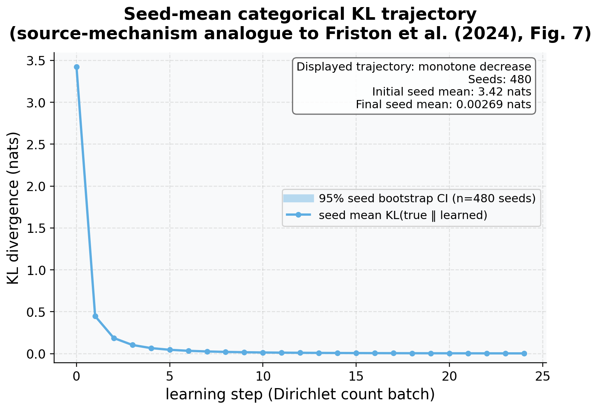

Language acquisition follows conjugate Dirichlet updating
Where the first study fused fixed beliefs in a single round, the second asks whether a single agent can acquire the likelihood of its shared world at all, and how quickly it does so. The design is a categorical source-mechanism analogue of the language-acquisition mechanism discussed by Friston et al. (Friston et al. 2024): each configured seed runs an agent that learns the likelihood of its shared world by conjugate Dirichlet updates over 24 count batches, the count update Eq. (13). The recorded trajectory is \(\mathrm{KL}(\text{true } A \,\|\, \text{learned } A)\) before each batch — it starts at the flat-prior maximum and declines monotonically toward zero as the agent “acquires the language” of its world. The KL here is the same divergence whose \(\alpha\to1\) Rényi limit is established by Lemma 3 (Eq. (2)), so the learning curve and the recovery limits measure the same object.
- Initial KL (flat prior): 3.4231
- Final KL (after 24 batches): 0.0027
- Total KL reduction: 3.4204
- Trajectory points: 25 ordered learning steps per seed
- Pointwise seed bootstrap: 95% intervals over \(n = 480\) independent seeds
- Trajectory monotone-decreasing: Yes
The monotone decline to a final KL of 0.0027 is the demonstrated quantity behind the acquisition claim: under the tested count schedule, the learned likelihood moves toward the true generative likelihood as conjugate counts accumulate. This finite trajectory is evidence of the update’s behavior, not a convergence-rate result for arbitrary data-generating processes.

Figure 10 plots the full learning curve and its CI band.